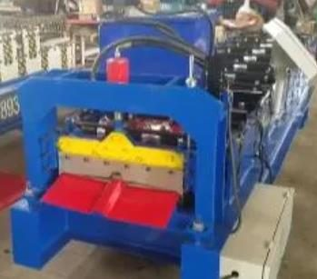
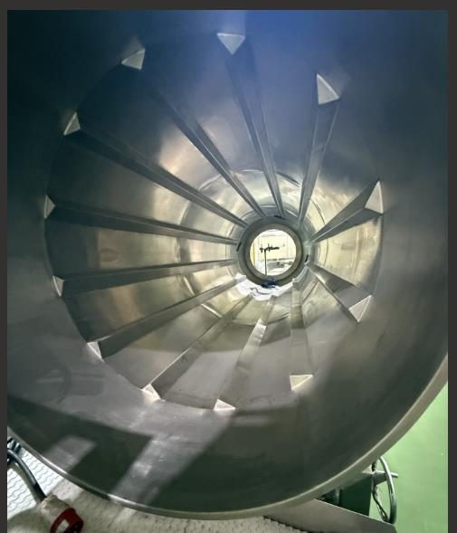
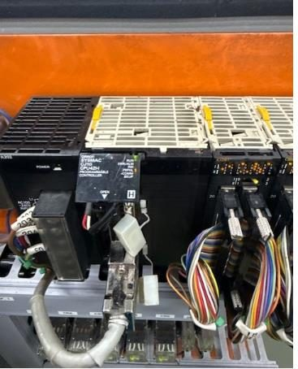
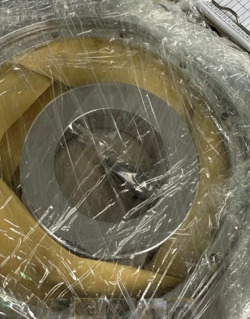
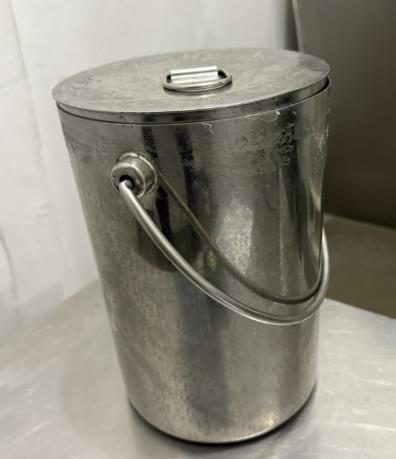
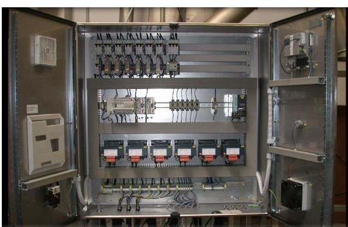
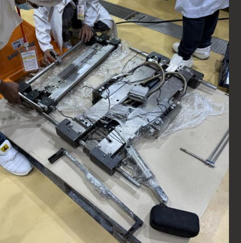

Eight jobs other shops turned down, sub-contracted out, or ran out of time on — and what happened once AMSC got involved.

The drum on this pastry line was warped and worn past what most shops would touch — several machinists and fabrication companies had already declined, citing complexity and limited technical know-how. We stripped it to bare metal, remachined it true on our own lathes, and reinstalled it in the line.

This roll forming machine had gone dark — its control system needed to be brought back to life. We handled the machine integration and fabricated the missing parts to get it producing ridge cap again.

We ran a rush restoration on their ribbon blender to avoid a production loss heading into peak season, and separately fabricated a seasoner drum built to the same standard.

We restored the PLC and HMI control system on an injection molder that had lost its advanced control functions, and separately rebuilt a roll-up door ahead of a compliance audit — with 72 hours on the clock.

No replacement parts were available locally for their payoff machine, so we reverse-engineered and machined the components ourselves — matched to spec, made in-house.

Their date coding was still done by hand. We designed and fabricated an automated date coder to replace the manual process, plus a run of stainless containers built to pharma-grade finish.

A volumetric packing machine had gone dark. We restored the electrical control panel from the ground up and brought the whole line back to active service.

A packaging machine sat idle for lack of working parts. We fabricated the missing components in-house and brought the whole mechanism back to reactivation.